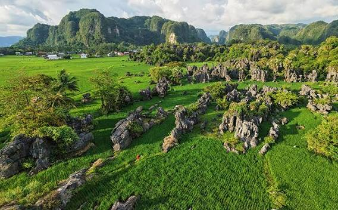
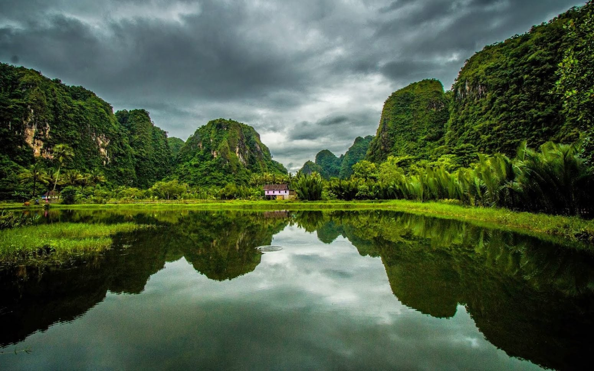
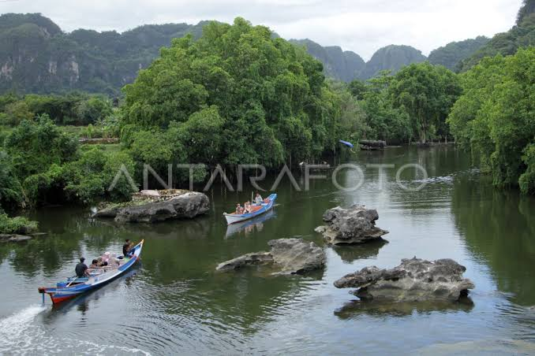

Selamat Datang di Rammang-Rammang
Rammang-Rammang merupakan kawasan wisata alam yang terkenal dengan pemandangan pegunungan karst, sungai, sawah, dan suasana pedesaan yang indah.
Destinasi ini berada di Kabupaten Maros, Sulawesi Selatan dan menjadi salah satu tujuan wisata alam yang menarik untuk dikunjungi.
Tentang Rammang-Rammang
Keindahan Alam
Kawasan Rammang-Rammang memiliki bentang alam karst yang sangat khas. Pengunjung dapat melihat tebing batu kapur, sungai, persawahan, dan kehidupan masyarakat setempat.
Pesona Wisata
Salah satu pengalaman menarik adalah menyusuri sungai menggunakan perahu sambil menikmati pemandangan alam di sekitar kawasan karst.
Galeri Rammang-Rammang



Aktivitas yang Dapat Dilakukan
- Naik perahu menyusuri sungai.
- Menikmati pemandangan pegunungan karst.
- Mengambil foto pemandangan alam.
- Menjelajahi kawasan pedesaan.
- Menikmati suasana alam yang tenang.
Informasi Lokasi
Nama: Rammang-Rammang
Kabupaten: Maros
Provinsi: Sulawesi Selatan
Negara: Indonesia
Tabel Informasi Wisata
| Informasi | Keterangan |
|---|---|
| Nama Wisata | Rammang-Rammang |
| Lokasi | Maros, Sulawesi Selatan |
| Jenis Wisata | Wisata Alam |
| Aktivitas Utama | Menyusuri sungai dengan perahu |
| Fasilitas | Perahu, area wisata, dan fasilitas umum |